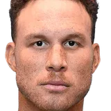

Played 2 seasons for 2 teams; his teams went 12–17 in his games.
Final NBA finish, season by season
Title Finals Other playoffs Missed the playoffs. #1 = champion; the dashed line is last place that season. Each point opens that season's final standings.
All 30 teams ranked in 2013-14, his best finish (#5)Teammate help

Blake Griffin4.01 season Jrue Holiday1.01 season
Jrue Holiday1.01 season Jamal Crawford0.51 season
Jamal Crawford0.51 season
Career
Regular seasons 1946-47 to 2026-27, games through Nov. 17, 2026. Records include 2026-27 to date; season counts and finishes use completed seasons. Each card opens its board. How we count.
Latest completed seasons
- 2013-14·LA Clippers·#5 of 3057–25 · Lost in the conference semifinals 2–4 to
 Oklahoma City
Oklahoma City - 2012-13·
 Philadelphia·#19 of 3034–48 · Missed the playoffs
Philadelphia·#19 of 3034–48 · Missed the playoffs
Season by season
Newest first; every header sorts. Final NBA finish is the team's rank among all teams that season (#1 = champion) and opens that season's standings. "Without him" uses the team-season window; the span line counts only the games between his first and last game for the team.
| 2013-14 | LA Clippers3rd West | #5 of 30 | 57–25 69.5% | Lost conf semis 2–4 | 2 of 82 | 2–0 100.0% | 55–25 68.8%span: N/A, gap N/A | +31.2 |
| 2012-13 | #19 of 30 | 34–48 41.5% | Missed the playoffs | 21 of 82 | 6–15 28.6% | 17–23 42.5%span: 9–6, gap −31.4 | −13.9 | |
| 2012-13 | LA Clippersstint 2/2, 03-10 to 04-104th West | #10 of 30 | 56–26 68.3% | Lost 1st round 2–4 | 6 of 82 | 4–2 66.7% | 25–16 61.0%span: 4–4, gap +16.7 | +5.7 |
On/off, starts and close games
From the lineup data, 1996-97 on. On/off is net points per 100 possessions with him on the floor minus off, a different unit from the win-rate gaps. Started and off the bench are team records in those games; close games are those within 5 points in the last 5 minutes with him on the floor.
| 2013-14 | LA Clippers | −57.1 | N/A | 2–0 100.0% | N/A |
| 2012-13 | −10.7 | 0–1 0.0% | 6–14 30.0% | 0–1 0.0% | |
| 2012-13 | LA Clippers | −7.5 | N/A | 4–2 66.7% | N/A |
Teammate help by season
Help = Teammates Score points for honors won that season by teammates who shared a game with him. How help works.
- 2013-14LA Clippers
Blake Griffin All-NBA 2ndAll-Star2 gJamal Crawford Sixth Man2 g
More: last season's honors and other teammates
Help coming in (teammates' honors the season before): 4.0
Other teammates (no honors that season): Willie Green 2 g, Matt Barnes 2 g, Darius Morris 2 g, Darren Collison 2 g, DeAndre Jordan 2 g, Jared Dudley 2 g, Ryan Hollins 2 g, Antawn Jamison 2 g, BJ Mullens 1 g, JJ Redick 1 g
- 2012-13Philadelphia
Jrue Holiday All-Star17 g
More: last season's honors and other teammates
Help coming in (teammates' honors the season before): 0
Other teammates (no honors that season): Dorell Wright 21 g, Lavoy Allen 21 g, Evan Turner 21 g, Thaddeus Young 21 g, Spencer Hawes 21 g, Jason Richardson 19 g, Nick Young 18 g, Damien Wilkins 16 g, Kwame Brown 12 g, Arnett Moultrie 10 g, Royal Ivey 7 g
- 2012-13LA Clippers
 Chris Paul All-NBA 1stAll-StarAll-Def 1stAll-Star MVP6 gBlake Griffin All-NBA 2ndAll-Star6 g
Chris Paul All-NBA 1stAll-StarAll-Def 1stAll-Star MVP6 gBlake Griffin All-NBA 2ndAll-Star6 g
More: last season's honors and other teammates
Help coming in (teammates' honors the season before): 10.0
Other teammates (no honors that season): Willie Green 6 g, Matt Barnes 6 g, Caron Butler 6 g, DeAndre Jordan 6 g, Ryan Hollins 6 g, Lamar Odom 6 g, Jamal Crawford 5 g, Ronny Turiaf 4 g, Grant Hill 3 g, Eric Bledsoe 3 g, DaJuan Summers 2 g, Chauncey Billups 2 g
Compare with a peer
Suggested peers need 300+ career games. Pick anyone below.
Record against each opponent
Regular season, completed seasons: 29 games, 12–17, against 18 franchises. Grouped by franchise (named as today); game lists keep each team's name that season.
| Games list | |||||||
|---|---|---|---|---|---|---|---|
| 3 | 2–1 | 66.7% | +1 | N/A | 2012-13 | ||
| 2 | 1–1 | 50.0% | 0 | N/A | 2012-13 to 2013-14 | ||
| 2 | 0–2 | 0.0% | −2 | N/A | 2012-13 | ||
| 2 | 1–1 | 50.0% | 0 | N/A | 2012-13 | ||
| 2 | 0–2 | 0.0% | −2 | N/A | 2012-13 | ||
| 2 | 1–1 | 50.0% | 0 | N/A | 2012-13 to 2013-14 | ||
| 2 | 1–1 | 50.0% | 0 | N/A | 2012-13 | ||
| 2 | 0–2 | 0.0% | −2 | N/A | 2012-13 | ||
| 2 | 0–2 | 0.0% | −2 | N/A | 2012-13 | ||
| 2 | 2–0 | 100.0% | +2 | N/A | 2012-13 | ||
| 1 | 0–1 | 0.0% | −1 | N/A | 2012-13 | ||
| 1 | 1–0 | 100.0% | +1 | N/A | 2012-13 | ||
| 1 | 1–0 | 100.0% | +1 | N/A | 2012-13 | ||
| 1 | 0–1 | 0.0% | −1 | N/A | 2012-13 | ||
| 1 | 1–0 | 100.0% | +1 | N/A | 2012-13 | ||
| 1 | 1–0 | 100.0% | +1 | N/A | 2012-13 | ||
| 1 | 0–1 | 0.0% | −1 | N/A | 2012-13 | ||
| 1 | 0–1 | 0.0% | −1 | N/A | 2012-13 |
Rows add up to his career record in his games. A playoff series counts when he played in it; early round-robin games show as games only. How we count.
Arrival and departure
Team wins per 82 games the season before he arrived vs his first season there, and his last season vs the season after he left. Per 82 so short seasons compare fairly. These are team records, not a measure of what he did.
| Left | LA Clippers | 2014-15 | 2013-14: 57–25 57.0 per 82 | 2014-15: 56–26 56.0 per 82 | −1.0 wins |
| Left | 2013-14 | 2012-13: 34–48 34.0 per 82 | 2013-14: 19–63 19.0 per 82 | −15.0 wins | |
| Arrived | 2012-13 | 2011-12: 35–31 43.5 per 82 | 2012-13: 34–48 34.0 per 82 | −9.5 wins | |
| Arrived | LA Clippers | 2012-13 | 2011-12: 40–26 49.7 per 82 | 2012-13: 56–26 56.0 per 82 | +6.3 wins |
Seasons split between teams
Each team's record before his first game for it, inside his window (games with and without him) and after his last game, in the seasons he played for two or more teams.
| 2012-13 | Oct. 31, 2012 to Jan. 8, 2013 | N/A | 23–38 37.7% | 11–10 52.4% | 21 | |
| 2012-13 | LA Clippers | March 10, 2013 to April 10, 2013 | 27–8 77.1% | 29–18 61.7% | N/A | 6 |